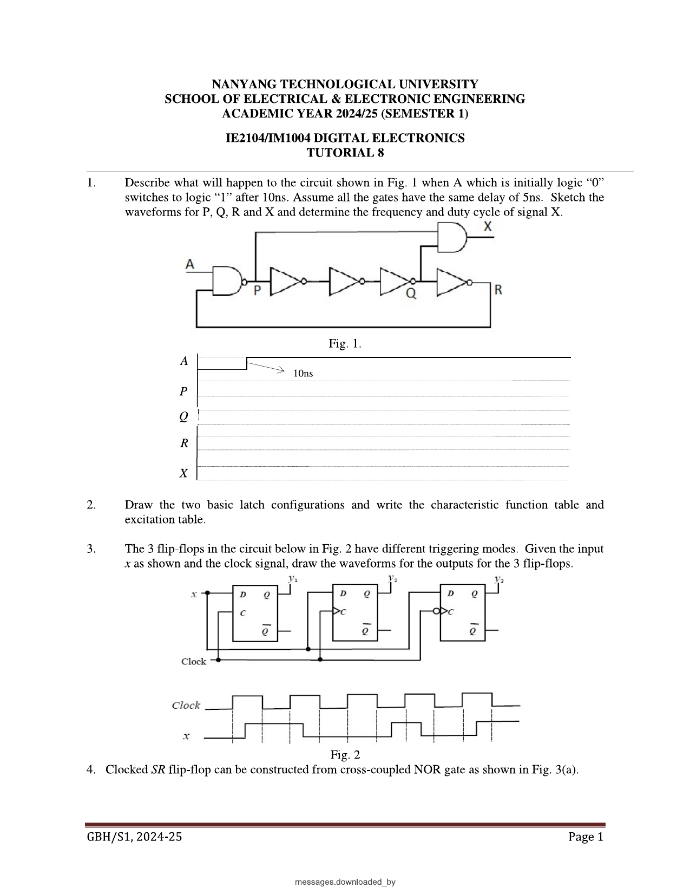
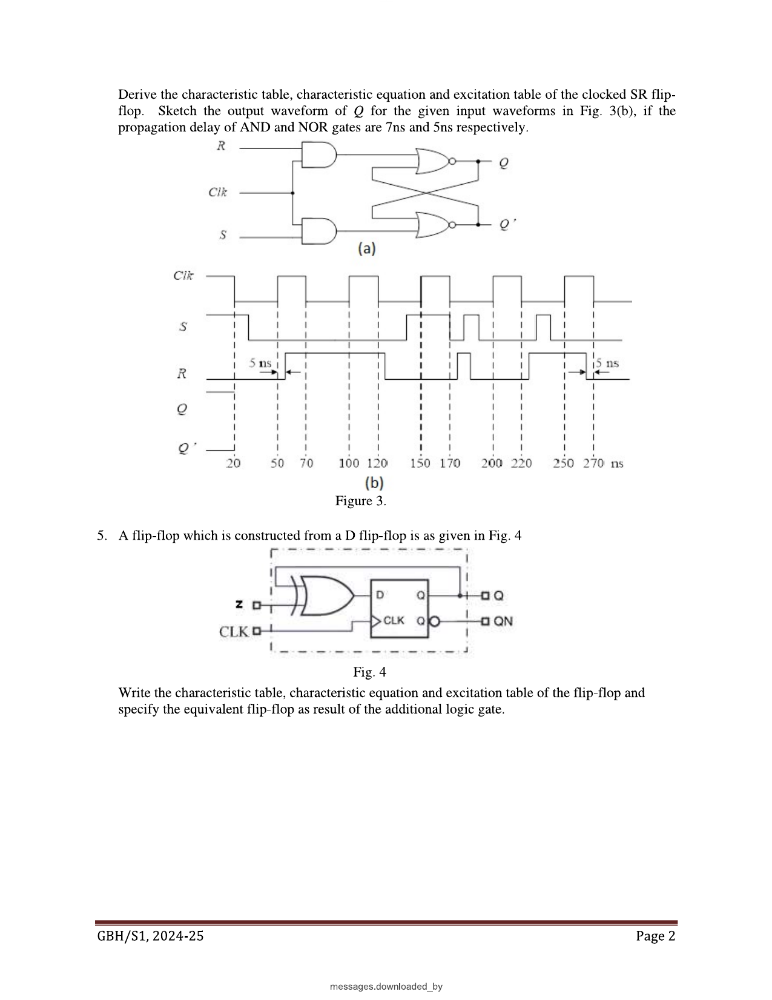

Week 8 — Storage Elements: Latches & Flip-Flops
Lecture: "Sequential Circuits" (pages 2–46) · Tutorial 8
This page interleaves each idea with the question that tests it — learn a small piece, then use it immediately. Prefer one long read top-to-bottom instead? → Classic layout
Why we need a whole new topic: memory
Every circuit you've built so far (Weeks 1–7) has been combinational: its output depends only on the inputs right now. A comparator doesn't care what A and B were five seconds ago. But most real systems need to remember something — a counter needs to remember its current count, a vending machine needs to remember how much money it's been fed so far. That requires a circuit whose output depends on the present input and on the past — which means it needs some form of internal memory.
A sequential circuit is built by taking combinational logic and feeding some of its own output back in as an input. That feedback loop is what lets the circuit "remember" — the current output depends partly on itself, one step in the past.
= key is combinational: punch in 2+2 and it always shows 4, no matter what you calculated before. A bank account balance is sequential: today's balance depends on yesterday's balance plus today's transactions. You cannot know the balance from today's transactions alone — you need the memory of where it stood before.
Where memory comes from: an odd ring of inverters
Take an odd number of inverters (say 3 or 5) and connect them in a ring — output of the last one feeding back into the input of the first. Trace a signal around: 3 inversions turns a 0 into a 1, and feeding that back around turns it into a 0 again... it never settles. It oscillates forever, because there's no stable point where "output = input" can be satisfied.
What it calculates: the frequency at which an odd-numbered ring of inverters self-oscillates. When to use it: only once you've confirmed the ring has an odd number of inversions total — that's the condition that rules out any stable state and forces oscillation in the first place.
| N | number of inverters in the ring (must be odd, or it never oscillates — a single inverter ring settles at a useless mid-supply voltage instead). |
|---|---|
| dinv | propagation delay of one inverter. |
| why the "2" | the signal must ripple all the way around the ring twice to complete one full cycle (once to flip, once to flip back) — so one period = 2×N gate-delays. |
Now try it with an even number of inverters instead. Trace a signal around: an even number of flips returns it to where it started — that's now a valid, stable, self-consistent state. Two of them exist (all-0-then-1-alternating in one direction, or the reverse), and which one the circuit settles into is essentially random (decided by tiny manufacturing differences on power-up). This is a bistable circuit — the most primitive possible "memory": it remembers which of the two stable patterns it happened to settle into.
🔗 Practice: Tutorial 8, Q1 — the ring oscillation condition
This question is exactly the odd/even inverter-ring rule from Concept 2, just with an extra gate that can switch the ring between "broken" and "odd" on demand. Try it yourself before revealing the answer.

A initially 0, switches to 1 after 10ns. All gates have 5ns delay. Find the waveforms for P, Q, R, X and the frequency/duty cycle of X.
Try it yourself first, then reveal the answer
Read the circuit as: P = NAND(A, R); then P passes through four inverters in series to produce R (P→Q takes 2 inverters, Q→R takes 2 more); and X = AND(P, R). While A=0, the NAND gate is forced to output P=1 no matter what R does — this permanently breaks the feedback loop, so the ring cannot oscillate and everything sits static: P=Q=R=X=1.
The moment A becomes 1, the NAND gate starts behaving like a plain inverter with respect to R (NAND(1,R)=R̄). Combined with the 4 straight inverters already in the loop, that's 5 inversions total in one full trip around the ring — an odd number, exactly the oscillation condition from the slides above. I verified this by simulating the circuit gate-by-gate with the given 5ns delays (each gate's output re-evaluated 5ns after any input change):
Verified result: after a short startup transient (the first change reaches P at t=15ns), P, Q, R all settle into clean 20MHz square waves with a 50% duty cycle, each delayed from the previous by 10ns (one node = 2 inverter-delays). X, being the AND of two points on the same ring that are 20ns apart within the 50ns cycle, also ends up oscillating at the same 20MHz, 50% duty cycle, just phase-shifted from P and R rather than a narrow pulse (I originally expected a narrow spike here, but the full discrete-event simulation showed each transition of X is triggered independently by whichever of P/R changed last, producing a full square wave, not a glitch — a good reminder to simulate rather than eyeball these).
Answer: once oscillating, all four signals run at 20MHz, 50% duty cycle, staggered in phase by multiples of 10ns.
Cross-coupled cells: giving that bistable behaviour a proper interface
An even ring of exactly two inverters, cross-coupled (each one's output feeds the other's input), is bistable with no way to control which state it's in. To make it useful, replace the two plain inverters with two 2-input NAND (or NOR) gates instead — the second input on each gate becomes an external control line that lets you force the cell into a chosen state. This is the basic binary cell, the building block of every latch and flip-flop that follows.
Cross-coupled NAND cell (active-low S̄R̄ latch)
Two NAND gates, cross-coupled: gate 1 takes inputs (S̄, Q̄) and outputs Q; gate 2 takes inputs (R̄, Q) and outputs Q̄. Because they're NAND gates, the control inputs are active-low — asserting a control line means driving it to 0, not 1.
| S̄=0, R̄=1 (Set) | forces Q=1, Q̄=0. Loads a binary "1" into the cell. |
|---|---|
| S̄=1, R̄=0 (Reset) | forces Q=0, Q̄=1. Loads a binary "0" into the cell. |
| S̄=1, R̄=1 (Rest) | neither input asserted — Q and Q̄ hold whatever they were before. This is the memory in action. |
| S̄=0, R̄=0 (Forbidden) | both NAND outputs are forced to 1, so Q=Q̄=1 — the two outputs are no longer complements of each other, which breaks the whole point of the cell. Worse, if both inputs are released simultaneously, which output settles to 0 first is a race decided purely by microscopic manufacturing differences between the two gates — completely unpredictable. This combination must always be avoided. |
Cross-coupled NOR cell (active-high SR latch)
Same idea, mirrored: two NOR gates cross-coupled, but now the control inputs are active-high.
| S=1, R=0 (Set) | Q=1, Q̄=0. |
|---|---|
| S=0, R=1 (Reset) | Q=0, Q̄=1. |
| S=0, R=0 (Rest) | holds previous state. |
| S=1, R=1 (Forbidden) | Q=Q̄=0 — same problem as before, and the same race if released simultaneously. |
🔗 Practice: Tutorial 8, Q2 — the two basic latch configurations
This question just asks you to reproduce Concept 3's two cells and their tables from memory. Try it yourself before revealing the answer.
Draw the two basic latch configurations and write the characteristic function table and excitation table.
Try it yourself first, then reveal the answer
This is exactly the cross-coupled NAND cell (active-low S̄R̄) and cross-coupled NOR cell (active-high SR) covered above, complete with their function tables (Set/Reset/Rest/Forbidden). The "characteristic table" for a raw latch is just that same 4-row function table; the excitation table follows the same pattern shown for the SR flip-flop above (S̄R̄ swaps the don't-care columns since it's active-low). No new derivation needed — this question is testing whether you can reproduce the Slides section above from memory.
Propagation delay through the cross-coupled cell: Q and Q̄ don't move together
Setting the NOR latch (S: 0→1 while R=0): the change at S only has to pass through one gate to reach Q̄ (one tPHL), but it has to pass through that same gate, then loop around through the second gate to reach Q (tPHL + tPLH, i.e. two gate-delays). So Q̄ always changes a full gate-delay before Q does. The same asymmetry happens in reverse when resetting via R. This matters later: it's exactly the mechanism behind "ones and zeros catching" in Tutorial 9.
Turning it into a clocked flip-flop
A bare cross-coupled cell reacts to S/R the instant they change — that's an asynchronous latch. Real synchronous systems want every storage element to update only in step with a shared clock. The fix: put an AND gate in front of each of S and R, with the clock as the second input to both ANDs.
Clk=1 → AND outputs simply pass S and R straight through to the cell
| Clk | S | R | Next Q |
|---|---|---|---|
| 0 | X | X | no change |
| 1 | 0 | 0 | no change |
| 1 | 0 | 1 | Q=0 (reset) |
| 1 | 1 | 0 | Q=1 (set) |
| 1 | 1 | 1 | indeterminate |
Characteristic table, characteristic equation, and excitation table — what these three things actually are
Every flip-flop type gets described by exactly these three things, and it's worth being clear on what each one is for, because the tutorial questions ask for all three every time:
| Characteristic table | given the current inputs and the current state Qt, what will the next state Qt+1 be? (Forward direction: inputs → next state.) |
|---|---|
| Characteristic equation | the same table, but compressed into a single Boolean formula for Qt+1 — read straight off a K-map of the characteristic table (Week 5 skills, reused here). |
| Excitation table | the reverse question: given that I want the state to go from Qt to a specific Qt+1, what input values must I supply? This is what you actually need when designing a circuit around a flip-flop (Week 11), so it's worth building this table now. |
SR flip-flop
What it calculates: the SR flip-flop's next state directly from its Set/Reset inputs and current state. When to use it: any time you're given S, R and Qt and need Qt+1 in one step, instead of walking the full function table.
| S term | if S=1, Qt+1=1 outright — Set overrides everything. |
|---|---|
| R̄·Qt term | if S=0 and R=0 (Rest), this reduces to Qt+1=Qt — hold. If R=1, this term is forced to 0, and since S=0 too, Qt+1=0 — Reset. |
| Qt→Qt+1 | S | R |
|---|---|---|
| 0→0 | 0 | X |
| 0→1 | 1 | 0 |
| 1→0 | 0 | 1 |
| 1→1 | X | 0 |
Reading the excitation table: to hold at 0, R can be anything as long as S=0 (don't-care on R because R=1,S=0 also gives 0). To go from 1 to 1, R must specifically be 0 (R=1 would force a reset, breaking the hold) — S is don't-care because S=1 already gives 1 regardless.
🔗 Practice: Tutorial 8, Q4 — clocked SR flip-flop, with real delays
This question strings together the clocked-cell construction (Concept 5), the Q/Q̄ delay asymmetry (Concept 4), and the SR characteristic equation (Concept 7) into one timed trace. Try it yourself before revealing the answer.

Derive the characteristic table, equation, and excitation table of the clocked SR flip-flop in Fig. 3(a); sketch Q for the waveforms in Fig. 3(b), given AND gates have 7ns delay and NOR gates have 5ns delay.
Try it yourself first, then reveal the answer
Fig. 3(a) is exactly the "clocked flip-flop" construction from the slides above — R and S are each ANDed with Clk before reaching a cross-coupled NOR cell — so the characteristic table, equation (Qt+1=S+R̄Qt, SR=0), and excitation table are all identical to the SR flip-flop derived in the Slides section; this question is really testing whether you recognise the "AND-gated NOR cell" as the same circuit as the "NAND-decoded" version shown in lecture, just built the other way round.
Sketching Q for Fig. 3(b): the method is to work out, at each labelled clock edge (20, 50–70, 100–120, 150–170, 200–220, 250–270ns), whether S or R is asserted while Clk=1, then propagate that decision through the two gate delays in series: 7ns through the AND gate, then a further 5ns through the NOR gate for the "winning" output, or 5+5=10ns for the second output to follow (recall from the Slides section that the two NOR outputs never update simultaneously — one is always one gate-delay behind the other). Trace each Clk-high window in turn: if S is high and R is low during that window, Q sets 12ns after the window starts (or 12ns after S actually rises, if S rises after Clk); mirror this for R. Because reading the exact intended S/R values off the hand-drawn grid to the nearest nanosecond risks misreading pixels rather than logic, the reliable way to finish this yourself is to apply exactly this 12ns / 17ns (S-or-R-path vs. cross-coupled-second-gate path) delay rule at each of the six labelled instants on your own copy of Fig. 3(b) — the circuit recognition and the delay arithmetic are the actual exam skill being tested, not the pixel-perfect trace.
D flip-flop: patching SR's one real flaw
SR's forbidden state exists because S and R are told to fight for the same output with no built-in rule for who wins. The D flip-flop's fix is almost too simple: take a single input D, feed it straight into S, and feed its inverse D̄ into R. Now S and R can never both be 1 — the forbidden state is eliminated by construction, not by careful usage.
The trade-off: SR could independently Set, Reset, or Hold. D can only Set (D=1) or Reset (D=0) — it lost the ability to "hold" on demand, because holding now requires re-supplying whatever Q currently is as D. In a clocked D latch this doesn't matter much, since the Hold happens automatically whenever Clk=0.
| Qt→Qt+1 | D |
|---|---|
| 0→0 | 0 |
| 0→1 | 1 |
| 1→0 | 0 |
| 1→1 | 1 |
Notice the excitation table for D is trivial — D must simply equal whatever Qt+1 you want. That's the whole appeal of the D flip-flop as a design building block later on.
JK flip-flop: patching SR's flaw a different way
Instead of forbidding S=R=1, why not decide in advance what should happen there, and build that decision into the gating? J plays the role of S, K plays the role of R, but each is now gated by feedback from the opposite output: J is ANDed with Q̄, K is ANDed with Q, before reaching the underlying SR cell.
| Why gate J with Q̄ | if Q is already 1, there's no need to Set again — gating J off in that case (J·Q̄=0 when Q=1) means asserting J while Q is already 1 does nothing, rather than causing conflict. |
|---|---|
| Why gate K with Q | mirror logic — if Q is already 0, Reset is pointless, so K is automatically gated off. |
| Result when J=K=1 | whichever output happens to currently be 1 gets its corresponding gate enabled, driving the cell to flip — this is exactly a toggle. |
What it calculates: the JK flip-flop's next state directly from J, K and the current state. When to use it: any time you're given J, K, Qt and need Qt+1 in one step — note it never needs a forbidden-state restriction, since J=K=1 is defined as toggle rather than disallowed.
| Qt→Qt+1 | J | K |
|---|---|---|
| 0→0 | 0 | X |
| 0→1 | 1 | X |
| 1→0 | X | 1 |
| 1→1 | X | 0 |
T flip-flop: JK with J and K tied together
Tie J and K together and call the combined signal T ("Toggle"). T=0 gives J=K=0 (hold); T=1 gives J=K=1 (toggle) — the Set/Reset behaviour of JK becomes inaccessible, leaving only hold-or-flip.
What it calculates: whether the T flip-flop's state flips or holds on the next transition. When to use it: any time a circuit's next-state expression reduces to "Qt XOR something" — that something is playing the role of T, even if the circuit isn't drawn as a T flip-flop (exactly the recognition trick Tutorial 8 Q5 tests).
| Qt→Qt+1 | T |
|---|---|
| 0→0 | 0 |
| 0→1 | 1 |
| 1→0 | 1 |
| 1→1 | 0 |
Notice the pattern: T's excitation column is exactly "1 whenever the state actually changes, 0 whenever it doesn't" — the most direct possible encoding of "did something happen".
🔗 Practice: Tutorial 8, Q5 — a disguised T flip-flop
This question hands you a circuit that doesn't look like a T flip-flop at all — Concept 10's characteristic equation is exactly the tool that unmasks it. Try it yourself before revealing the answer.
Fig. 4: a flip-flop built from a D flip-flop with Z and Q fed into an XOR gate, whose output drives D. Write its characteristic table, equation, excitation table, and identify the equivalent flip-flop.
Try it yourself first, then reveal the answer
Trace the feedback: D = Z⊕Qt, and since this is a D flip-flop, Qt+1=D. Substitute directly:
Compare this letter-for-letter against the T flip-flop's characteristic equation derived above (Qt+1=T⊕Qt) — they're identical, with Z playing the exact role of T. So this circuit is a T flip-flop, with Z as its toggle input: Z=0 holds, Z=1 toggles.
| Qt→Qt+1 | Z (=T) |
|---|---|
| 0→0 | 0 |
| 0→1 | 1 |
| 1→0 | 1 |
| 1→1 | 0 |
I double-checked this by deriving the excitation table two independent ways — directly from Qt+1=Z⊕Qt (solve for Z: Z=Qt⊕Qt+1), and by copying the T flip-flop's excitation table from the Slides section — both give exactly the table above, confirming the equivalence.
Triggering schemes: when exactly does the flip-flop listen?
So far we've said "Clk=1 lets data through" — but that's only one of three fundamentally different design choices for when a flip-flop is allowed to change:
| Level-triggered | the flip-flop is "transparent" for the entire duration that Clk sits at one level (high-level or low-level triggered). Simple (just an AND gate as shown above), but risky: if the input changes more than once while the clock happens to be at that level, the output can change multiple times too, and it doesn't necessarily line up with a clean clock edge. |
|---|---|
| Pulse-triggered (master-slave) | built from two level-triggered stages back to back (below). Guarantees the output only updates once per clock pulse — but introduces its own subtle bug ("ones/zeros catching", Tutorial 9). |
| Edge-triggered | the flip-flop only samples its input for one vanishingly brief instant — the rising edge, or the falling edge, of the clock — using a Pulse Transition Detector. This is what virtually all modern ICs use. |
🔗 Practice: Tutorial 8, Q3 — level-triggered vs. edge-triggered
This question puts three flip-flops side by side, each following one of Concept 11's three triggering schemes, fed the same input and clock. Try it yourself before revealing the answer.
3 D flip-flops with different triggering modes, given the same D input x and the same clock — draw y₁, y₂, y₃.
Try it yourself first, then reveal the answer
Read the clock-input symbol on each flip-flop carefully — this is the whole point of the question:
| FF1 (plain C, no triangle) | a level-triggered D latch — transparent (y₁ follows x directly) for the entire time Clk=1; holds whatever x last was the moment Clk drops to 0. |
|---|---|
| FF2 (small triangle, no bubble) | positive edge-triggered — y₂ only updates to the current value of x at the instant Clk rises 0→1, and then holds that value regardless of what x does until the next rising edge. |
| FF3 (triangle with bubble) | negative edge-triggered — y₃ only updates at the instant Clk falls 1→0. |
To sketch it yourself: for y₁, copy x directly onto y₁ during every Clk-high interval, then flatten y₁ at its last value during every Clk-low interval. For y₂, mark every rising edge of Clk, and at each one, sample whatever x is doing at that exact instant — that sampled value becomes the new flat y₂ until the next rising edge. Do the same for y₃ but at falling edges instead. Because y₂ and y₃ only ever get to look at one instant per cycle, they will visibly "miss" any change in x that happens between their respective sampling edges — that's the entire pedagogical point of putting all three side by side.
Master/slave JK: two cells, one clock, opposite enable
Structure: a master basic cell fed by the raw J, K, Clk; its outputs feed into a slave basic cell, which is fed the inverted clock. Because master and slave are enabled by opposite clock phases, they are never both "listening" at the same time.
| Rising edge (Clk 0→1) | Master is enabled and loads according to J,K; Slave is disabled (inverted clock is now 0) — so whatever the master just loaded is not yet visible on the real output Q. |
|---|---|
| Falling edge (Clk 1→0) | Master is now disabled (locked in whatever it loaded during the high phase); Slave becomes enabled and copies the master's value through to the real output. This is the instant Q actually changes. |
The point of splitting it into two stages: it guarantees Q changes exactly once per clock cycle (on the falling edge), removing the "race" risk of a single level-triggered cell. But — see Tutorial 9, Q4 — if J or K glitches high even briefly while Clk is high, the master can catch that glitch and "remember" it for the rest of the high phase, even if J/K return low before the falling edge. That's the ones/zeros-catching problem, and it's the reason true edge-triggering (below) eventually replaced master-slave in most designs.
Edge-triggered flip-flop: a Pulse Transition Detector
A PTD is a small combinational circuit (typically an AND of Clk with a slightly delayed, inverted copy of Clk) that turns a clock edge into an extremely narrow pulse. Feed that narrow pulse in as the enable to a level-triggered cell, and the cell is "transparent" for such a short window that, for all practical purposes, it only samples the input at that one exact instant — eliminating the ones/zeros-catching window almost entirely.
Asynchronous preset and clear: the emergency override
Almost every real flip-flop IC adds two extra pins, Preset (PR) and Clear (CLR), that force Q to 1 or 0 immediately, completely bypassing J/K/D and the clock entirely. They exist so a system can be forced into a known starting state the instant power comes on, before the clock has even started ticking.
✍️ Write This Down
Copy these into your own notes:
- Sequential = combinational logic + feedback (memory). An odd ring of inverters oscillates; an even ring is bistable (2 stable states, unpredictable which one).
- Basic binary cell = cross-coupled NAND (S̄R̄, active-low) or cross-coupled NOR (SR, active-high). Forbidden state: both control lines asserted at once — Q and Q̄ stop being complements, and releasing both simultaneously causes an unpredictable race.
- Clocked SR FF: gate S and R with Clk (AND for active-high, or feed into a NAND-based decoder for active-low) so the cell only responds while Clk=1.
- SR: Qt+1=S+R̄Qt (S,R never both 1). D: Qt+1=D (S=D, R=D̄ — forbidden state eliminated by construction, but loses independent "hold"). JK: Qt+1=JQ̄t+K̄Qt (J gated by Q̄, K gated by Q — J=K=1 toggles). T: Qt+1=T⊕Qt (J and K tied together).
- Triggering schemes: level-triggered (transparent whole clock phase, can multi-trigger), pulse/master-slave (two level stages, opposite clock phase, output changes once per cycle but can suffer ones/zeros catching), edge-triggered (Pulse Transition Detector, samples only at one instant — the modern standard).
- Master-slave JK: master loads on the clock's asserted phase, slave copies master through on the opposite phase — Q visibly changes only on that second transition.
- Preset/Clear: asynchronous, immediate, bypass the clock entirely — used to force a known start-up state.
- Always check for a disguised flip-flop: substitute any feedback expression straight into Qt+1=D and simplify — it will often collapse into the SR/D/JK/T characteristic equation you already know (Tutorial 8 Q5 is exactly this trick).
🟥 Redstone Build: Memory Cells
This is one of the best-known builds in all of redstone engineering — the "RS latch" / "repeater latch" is exactly the cross-coupled cell from this week's slides, and most experienced redstone builders already know it without realising it's a flip-flop.
Build 1 — Cross-coupled NOR cell (the classic redstone RS latch)
- Place two redstone torches facing each other across a small gap, each sitting on its own block, with a lever or button as the two inputs S and R crossing into the opposite torch's block.
- Because a lit redstone torch turns off when the block it's attached to receives power, powering the "R" input pushes power into the torch that's holding Q high, turning it off — which then lets the "S side" torch light up. This is exactly the cross-coupled NOR behaviour: asserting one input forces the corresponding output low, which then allows the other output to go high.
- Verify: pulse the S lever briefly then release it (Set) — Q output (read off a redstone lamp) should latch on and stay on after you release the lever. Pulse R (Reset) — Q should latch off. This "stays on after you let go" behaviour is the entire concept of memory made physically visible.
Build 2 — Clocked D-latch
- Take your Build 1 RS latch. In front of the S and R inputs, add an AND gate (Week 2, Build 4) with Clk as the second input to both.
- Feed your D input into the S-side AND gate directly, and D through a redstone torch (inverter) into the R-side AND gate.
- Confirm: while the Clk lever is off, changing D does nothing to Q. Flip Clk on, change D, and watch Q follow it. Flip Clk back off, and Q freezes at whatever D last was — a physical demonstration of "transparent while high, latched while low".
Build 3 — T flip-flop (toggle)
- This is a well-known redstone build in its own right, usually used to make a single button push toggle a door open/closed — which is literally the T flip-flop's job (Qt+1=T⊕Qt).
- Build it using a redstone comparator/repeater "toggle latch" circuit (widely documented in-game as a "T flip-flop" by the Minecraft community, under that exact name), or, to stay consistent with this week's logic, build the JK flip-flop from Build 1's cell plus two extra AND gates feeding J and K back from Q̄ and Q as described in the slides, then tie J and K to the same single input.
- Verify: one pulse on the T input should flip the output lamp; the next pulse flips it back — confirm all four rows of the T characteristic table by stepping through several pulses in a row.
Stretch goal: build a redstone pulse limiter/edge-detector (comparator subtracting a delayed copy of a signal from itself) in front of your T flip-flop's input — this is the redstone equivalent of the Pulse Transition Detector from this week's slides, turning a held-down lever into a single clean edge-triggered pulse instead of a continuous toggle.